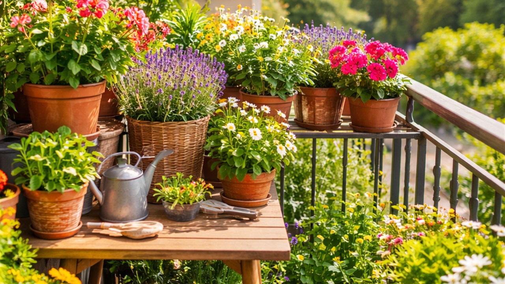
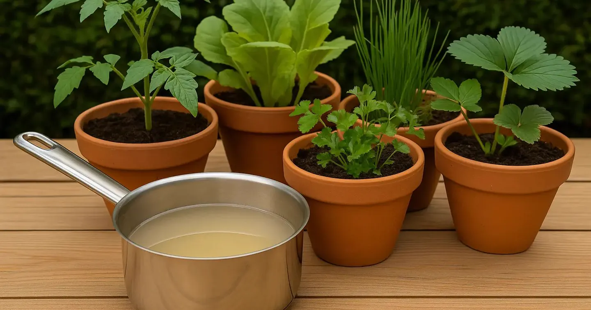
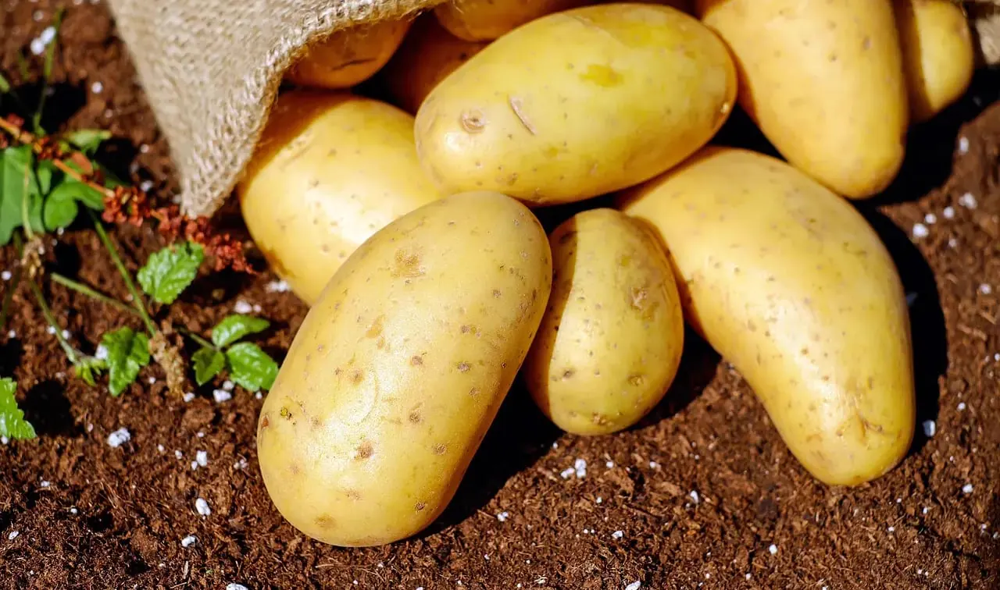

EcoBalcon · Jardinage sur balcon
Le balcon devient un jardin à vivre.
Des conseils clairs pour choisir les bonnes plantes, lancer un petit potager urbain et transformer quelques mètres carrés en coin plus frais, plus beau et plus vivant.
Commencer ici
Trois portes d'entrée simples selon ton envie du moment.
Poser les bonnes bases
Un point de départ simple pour installer un balcon agréable et éviter les erreurs classiques.
Lire pour commencerChoisir des cultures faciles
Des fiches pratiques pour cultiver sur balcon sans se noyer dans la technique.
Lire pour commencerGarder un balcon écolo
Eau, paillage, récupération et gestes durables pour un entretien plus serein.
Lire pour commencerExplorer par thème
Des repères visuels pour trouver rapidement le sujet qui t'aide vraiment.
Trouver un guide culture pas à pas
Les fiches les plus concrètes pour cultiver tomates, poivrons, laitues, radis, fraises et autres cultures de balcon.
Voir les fichesChoisir quoi planter selon son balcon
Des sélections de plantes, de légumes, d’aromatiques et d’idées de culture selon l’exposition et les envies.
Voir les plantationsMieux entretenir son balcon au quotidien
Arrosage, paillage, compost, nuisibles, chaleur et gestes simples pour garder un balcon sain et facile à vivre.
Voir les astucesAménager un espace plus pratique
Matériel, pots, compostage, récupération d’eau, plantes grimpantes et astuces pour organiser le balcon.
Voir les aménagementsÀ lire cette semaine
Retrouvez ici une sélection d’articles pratiques à lire en ce moment.

Entretien & astuces
Plantes qui survivent à la canicule
Plantes qui survivent à la canicule : découvrez les espèces résistantes à la chaleur pour un balcon fleuri et productif tout l’été, même par forte chaleur.
Lire l'articleArticles à découvrir
Une sélection des guides les plus récents pour lancer ou améliorer ton balcon au fil des saisons.

Fiches Techniques
Guide complet pour cultiver des poivrons sur son balcon
Apprenez à cultiver des poivrons sur son balcon : variétés compactes, pot idéal, soleil, arrosage, entretien, récolte et astuces pour obtenir des...

Entretien & astuces
Jardinage en lasagnes sur balcon : guide pratique
Découvrez comment créer un jardinage en lasagnes sur balcon pour un potager fertile, écologique et simple, même en ville avec peu d’espace. A vous...

Plantes & semis
Potager balcon : semis et arrosage à l’eau de cuisson
Apprenez à créer un potager balcon en combinant semis faciles et arrosage à l’eau de cuisson, pour économiser l’eau, enrichir le sol et cultiver...
Entretien & astuces
Plantes qui survivent à la canicule
Plantes qui survivent à la canicule : découvrez les espèces résistantes à la chaleur pour un balcon fleuri et productif tout l’été, même par forte...
Aménagement du balcon
7 Meilleures plantes grimpantes pour créer de l’intimité en ville
Découvrez les meilleures plantes grimpantes pour créer de l'intimité en ville. Apprenez à choisir et entretenir des plantes grimpantes adaptées à...

Plantes & semis
Pommes de terre balcon : cultiver en sac ou en bac facilement
Pommes de terre balcon : découvrez comment les planter en sac ou bac, entretenir vos plants, optimiser la récolte et jardiner facilement sur un...
Explorer les 34 articles
Potager, chaleur, économie d'eau, biodiversité, fleurs utiles et fiches culture : tout est regroupé dans une page unique avec recherche intégrée.